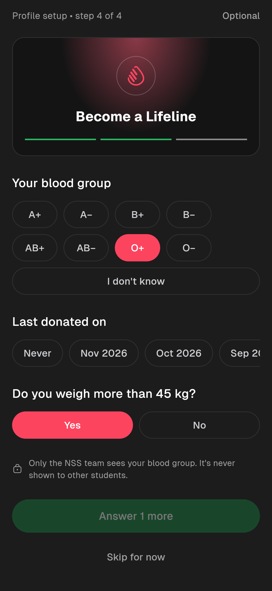
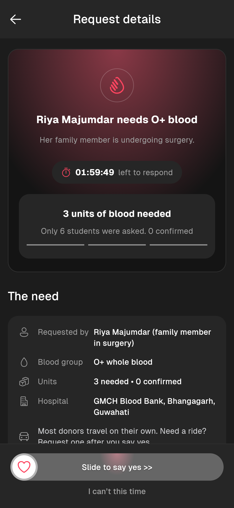
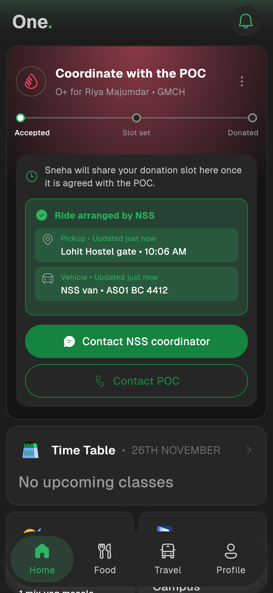
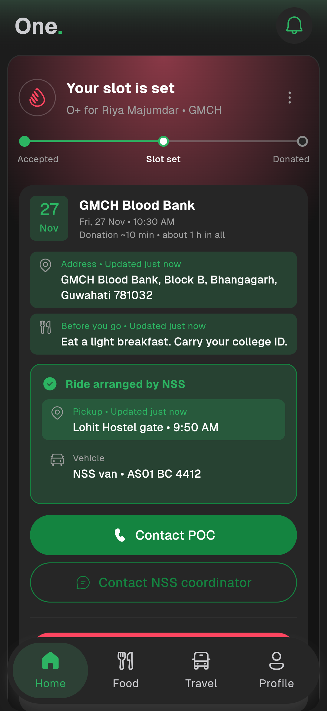
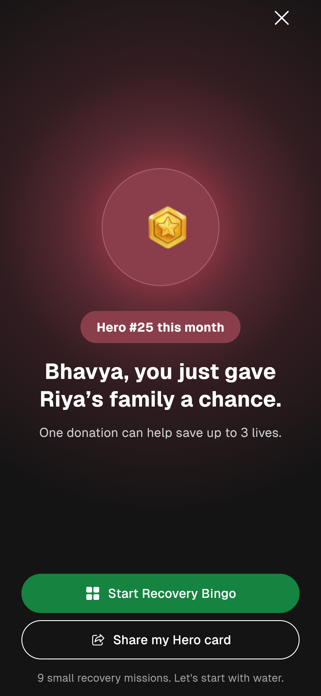
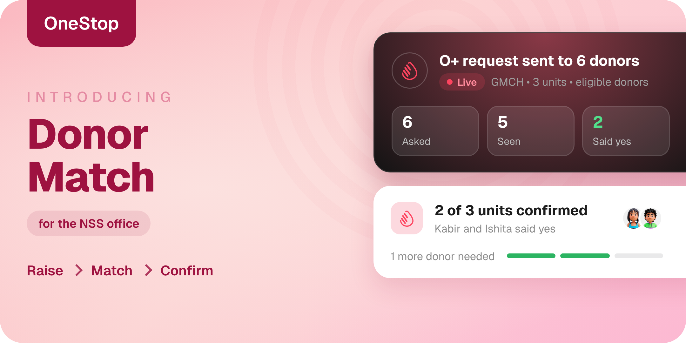

Breaking the Bystander Effect: Designing a Personalised Donor-Matching Experience for Urgent Blood Requests on Campus
At IIT Guwahati, urgent blood requests reach the whole campus as one broadcast email. Because everyone receives the same message, each person assumes someone else will step up, and the request goes unanswered. This project replaces that broadcast with a personalised experience inside OneStop, the campus super-app: each request is matched to a small group of eligible donors and sent as a personal, time-bound ask, and a guided flow takes them from yes to donating and being recognised for it.
The NSS office wants more students to show up. Its only tool is an email to everyone.
The NSS Office,
IIT Guwahati
It isn't unwillingness. It's five reasons the ask never lands.
30 students surveyed; 25 students, 5 faculty and 2 NSS coordinators interviewed. Every answer fell into one of five causes, coded A–E right through to the final screens.
"Someone else will do it"
93.3% assumed someone else would respond"Just another mail"
27% ignored the mails as spam"Too much effort"
50% didn't have enough time to spare"Not sure it's safe for me"
16.7% were concerned about their health"Nothing comes back"
No closure, no recognition, no memoryBehind each reason sits a well-known bias, not a lack of empathy.
Bystander effect
In a large group, each person assumes someone else will respond, so personal responsibility dissolves.
Habituation and reactance
Repeated, similar mails train people to ignore the whole category. Asking again and again breeds resistance.
Friction overestimation
People overestimate the effort of responding, verifying and travelling, so good intent stalls before action.
Fear and the first-timer barrier
Without knowing if they're eligible or what happens, first-timers default to "not me".
Missing feedback and social proof
The high point after donating goes unused, and no one sees who gave, so motivation fades.
They ignore requests that aren't meant for them.
One email
to everyone
A personal ask to
2 donors per unit
One request, six people asked, every step designed against a cause.

1Become a Lifeline
Blood group and last donation, asked once at sign-up. Only eligible students are ever matched.
 2
2Matched, by name
Takes the Time Table's spot on Home: who needs it, "only 6 students asked", units still needed.

3See details
Countdown, POC, hospital, what to expect and a safety FAQ. Saying no is one tap, guilt-free.

4Slide to say yes
A deliberate swipe commits. Need a ride? Request one; NSS arranges or declines it in the card.

5Slot set, POC first
Contact the POC directly; NSS stays one tap away. Mark the donation done whenever it happens.

6The hero moment
Recognition the moment it's done, then Recovery Bingo, a certificate and a place on the Hero wall.

For the NSS office: every gap, closed
- G1Raise once. One form replaces drafting a mail.
- G2Matched automatically by blood group and eligibility.
- G3Live view: asked, seen, said yes, units left.
- G4Slots and rides handled inside the donor's card.
- G5Confirmed and remembered: a growing donor registry.
BMy Donations
Eligibility countdown and a pause switch, so no one is asked too soon.
DExplore
Upcoming camps and "Learn in 30 secs" myths and facts.
EHero wall
Monthly heroes and a hostel leaderboard make giving visible.